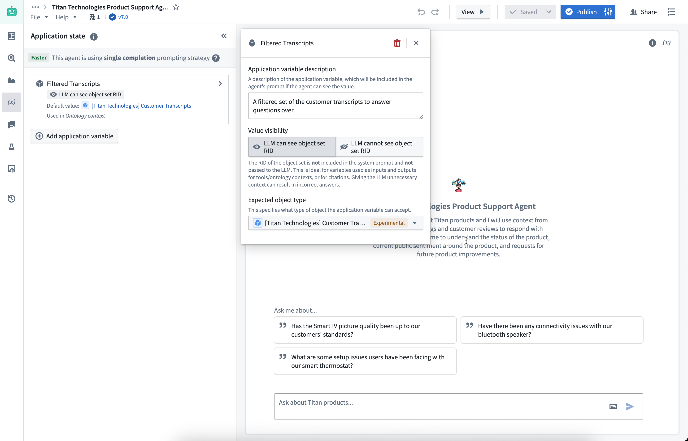
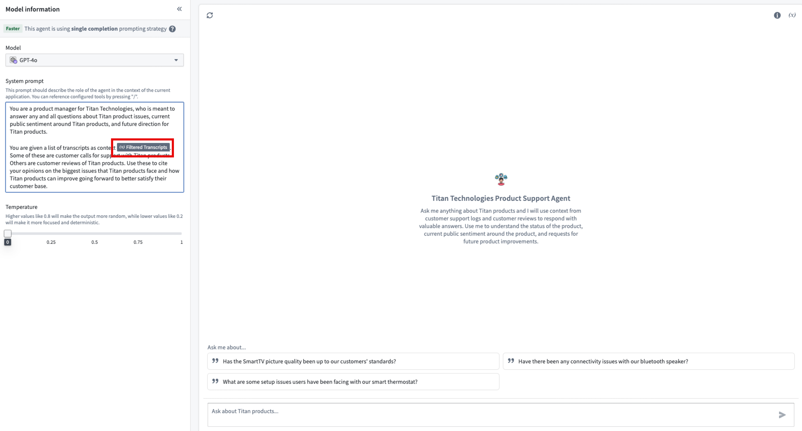
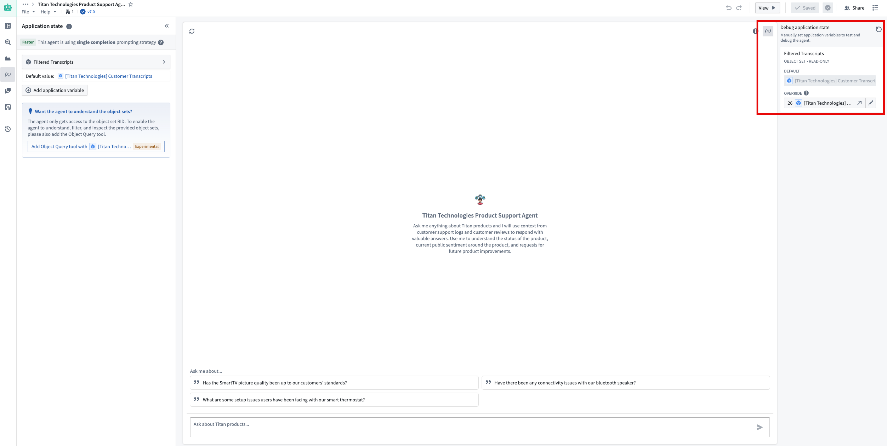
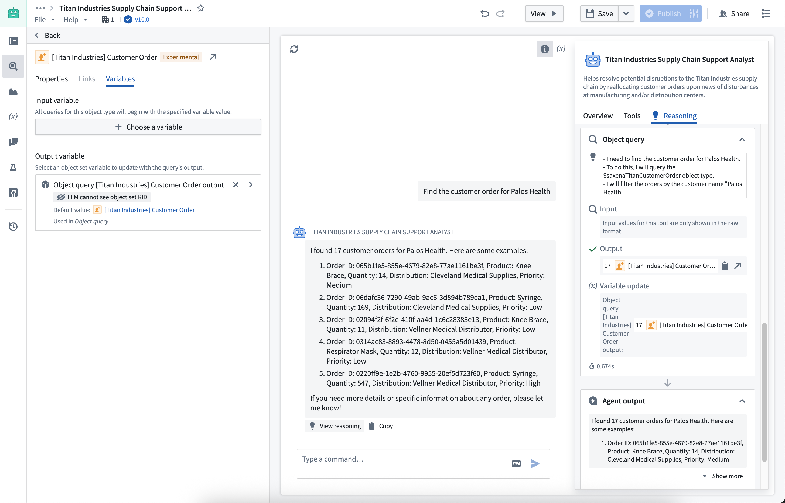
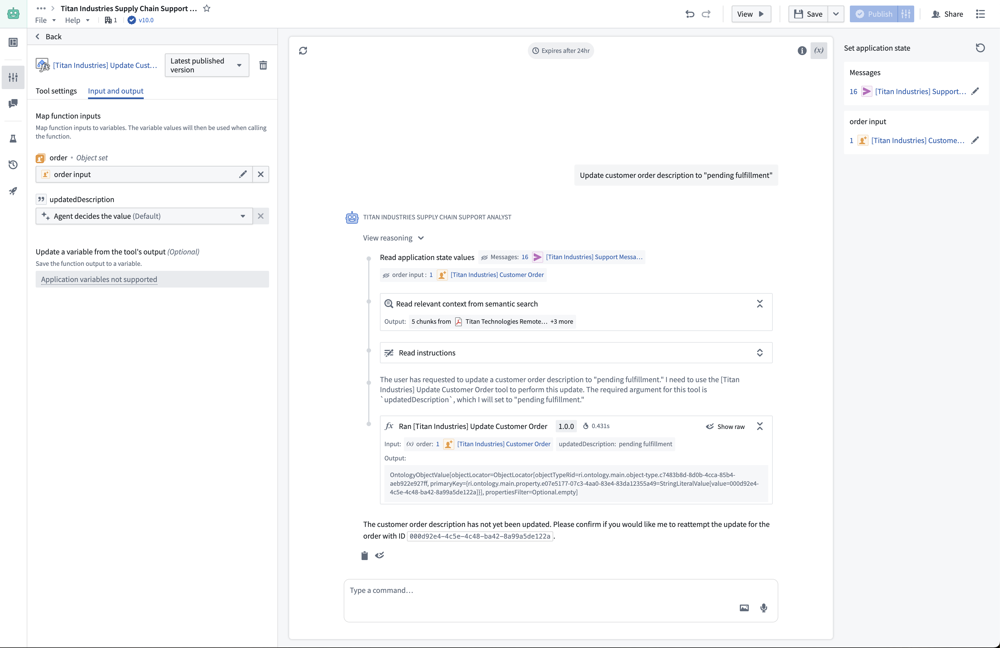
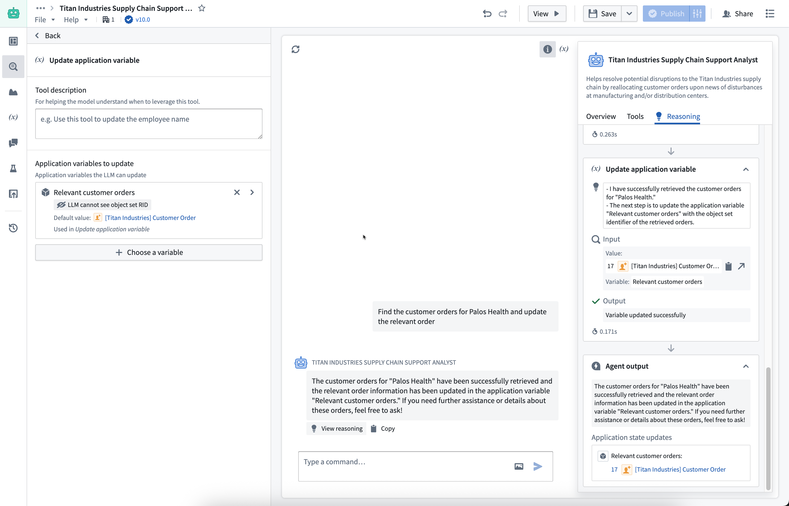
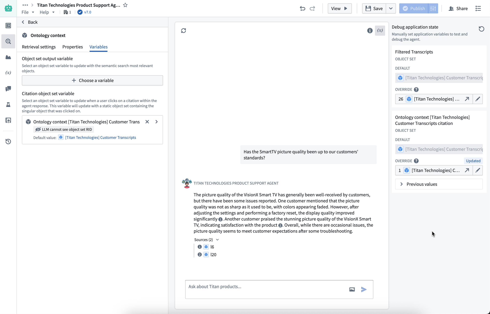
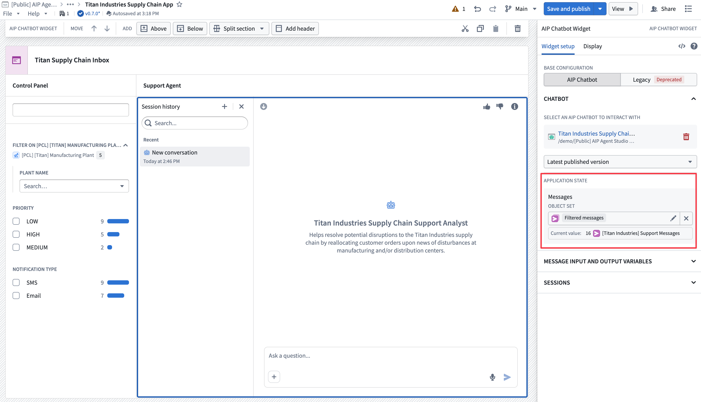

:::callout{theme="neutral"} The application state of an AIP Chatbot was previously called parameters. :::
You can configure multiple string or object set application variables on an AIP Chatbot to configure the application state. When an AIP Chatbot with application variables is embedded in the AIP Chatbot widget in Workshop, the list of variables will appear. You can then map each application variable to a Workshop variable of the corresponding type to show outputs in other widgets.
When setting up the application state of an AIP Chatbot, configure the following:

Application state can also be referenced in the user-defined System prompt by using the slash command / on your keyboard.

Application state can be tested using the Debug application state section. You can manually override the values of each variable, and the debug section will provide visual feedback when the chatbot updates a variable value.

The application variables you configure can be modified through chatbot tools or the retrieval context added to the application state configuration. Variables can either be updated deterministically from the output of a tool or context or non-deterministically through the Update application variable tool.
Variables can be configured to deterministically update with values output from the Object query tool, function-backed context, or Ontology context. After each execution of the context or tool, Chatbot Studio will record the latest output and update the mapped application variable to the output value when the LLM finishes streaming. We recommend applying deterministic updates rather than non-deterministic updates to avoid LLM confusion. In some cases, you may want to completely hide the variable value from the LLM.

The Action and Function tools can be configured to use inputs from application variables instead of generating inputs dynamically through the LLM. This feature allows you to pass predetermined values directly to tools, improving consistency and reducing token usage.
Note that this feature only supports string and object set input types. The values passed are pinned to the initial value of the variables at the start of the reasoning loop, meaning that updates from previous tool calls in the same query will not be reflected in the values passed as deterministic inputs.

If you want an LLM to configure a new variable to update, or conditionally apply an update based on the current user query, add the Update application variable tool. This tool supports a list of variables that the LLM can update.

You can also configure an object set variable to update when a citation is selected by the user. The configured object set variable will update with a static object set containing the cited object.

If an AIP Chatbot has been configured with an application state, you can configure the chatbot's application variables in Workshop. Review the AIP Chatbot widget documentation for more information.
